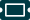

Farve koder
Farverne der bruges, er taget ud fra ucl's design guide.

Brug rgb farvekoden i 'background-color' eller 'color' i css fil
- BAGGRUND #F1F8F8 (Columbia blue 20%)
- IKONER #025560 (Midnight green 80%)
- NAV & MENU #7499A3 (Midnight green 40%)
- CTA #F58E76 (Terra cotta 100%)
- LÅST #DDDDDD
Ikoner
På appen/hjemmesiden bliver der brugt ikoner fx i menubar og til navigation. Alle ikonerne er ikoner de fleste kender til og har set før.
Hjem knap
placer i html
<img src="images/styleguide/Iconawesomehome.svg" alt="Hjem">
Kupon knap
placer i html
<img src="images/styleguide/Iconawesometicketalt.svg" alt="Kupon">
Sociale knap
placer i html
<img src="images/styleguide/Iconawesomeuserfriends.svg" alt="Sociale">
Tilbage knap
placer i html
<img src="images/styleguide/Iconioniciosarrowback.svg" alt="Tilbage">
Profil knap
placer i html
<img src="images/styleguide/Iconmaterialperson.svg" alt="Profil">
Samlemærker knap
placer i html
<img src="images/styleguide/trophy.svg" alt="Samlemærker">
Typografi
Typografien er taget ud fra ucl's design guide. Alt tekst har farvekoden #003A44 og er arial. Header 1 og 2 er bold, hvor normal brødtekst er normal i vægt.

Kode i css
h1 {
font-weight: bold;
color: #003A44;
font-family: arial;
}
h2 {
font-weight: bold;
color: #003A44;
font-family: arial;
}
p {
color: #003A44;
font-family: arial;
}
Taps
Der er inde under vores samlemærkeside, en tap-bar, med tre taps der sortere samlemærkerne.

HTML
CSS
.tablink {
border-top-left-radius:2em;
border-top-right-radius:2em;
margin: -17px -100px 0px 0px;
background-color: #3E747F;
color: white;
float: left;
border: none;
outline: none;
cursor: pointer;
padding: 25px 16px;
font-size: 25px;
width: 35%;
font-weight: bold;
}
.tabcontent {
color: white;
display: none;
padding: 100px 20px;
height: 100%;
font-weight: bold;
}
#Alle {background-color: #D3ECEB;}
#Laest {background-color: #D3ECEB;}
#Optjent {background-color: #D3ECEB;}
hr {
margin-top: 61px;
border: none;
}
Javascript
function openPage(pageName,elmnt,color) {
let i, tabcontent, tablinks;
tabcontent = document.getElementsByClassName("tabcontent");
for (i = 0; i < tabcontent.length; i++) {
tabcontent[i].style.display = "none";
}
tablinks = document.getElementsByClassName("tablink");
for (i = 0; i < tablinks.length; i++) {
tablinks[i].style.backgroundColor = "";
}
document.getElementById(pageName).style.display = "block";
elmnt.style.backgroundColor = color;
}
document.getElementById("defaultOpen").click();